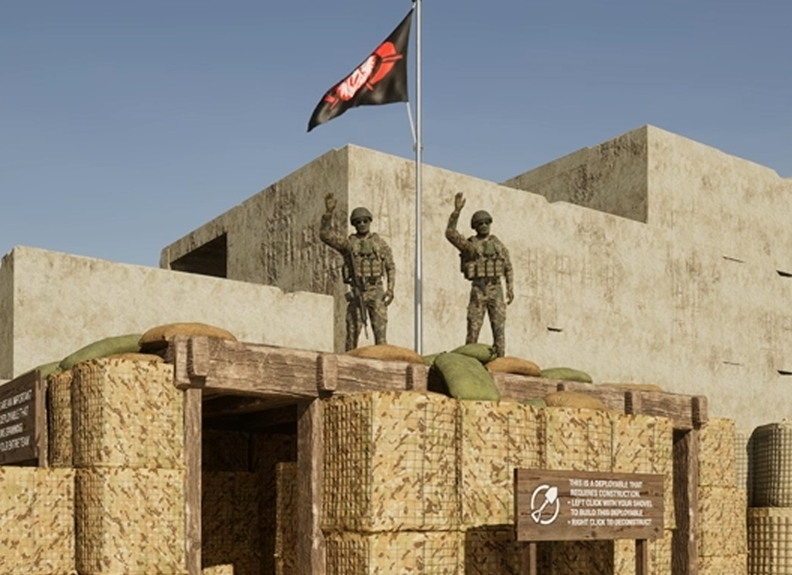

Raver88
Fondatore del clan e riferimento strategico dello Stato Maggiore. Coordina la visione generale e mantiene la direzione del gruppo.
Stato Maggiore
Raver88 e Domingo sono i due fondatori del clan e guidano il Reparto Zero con disciplina, visione e responsabilità. Questa pagina presenta il loro ruolo all’interno dello Stato Maggiore.

Fondatore del clan e riferimento strategico dello Stato Maggiore. Coordina la visione generale e mantiene la direzione del gruppo.
Fondatore del clan e pilastro operativo della struttura di comando. Sostiene l’ordine interno e la compattezza della squadra.
Formazione Reclute
Chiesa e Preacher seguono il percorso iniziale delle reclute, aiutando i nuovi membri a integrarsi nel clan con ordine, disciplina e chiarezza. Il loro ruolo è fondamentale per costruire basi solide fin dall’ingresso.

Addestratore reclute e reclutatore del clan. Segue i nuovi ingressi e li accompagna nel percorso iniziale, trasmettendo regole, metodo e mentalità del reparto.
Addestratore reclute e referente della CCFN. Supporta la formazione dei nuovi membri e contribuisce al coordinamento e alla continuità operativa del clan.
Formazione Avanzata
Raul è il punto di riferimento per l’addestramento TL e FTL. Oltre al ruolo formativo, è anche reclutatore del clan e contribuisce a preparare membri capaci di guidare, coordinare e sostenere il reparto nelle attività operative.

Addestratore TL e FTL
Raul si occupa della preparazione dei membri destinati ai ruoli TL e FTL, trasmettendo metodo, responsabilità e capacità di gestione sul campo. Il suo lavoro aiuta il clan a formare figure affidabili per il coordinamento operativo. Inoltre svolge anche il ruolo di reclutatore, contribuendo alla crescita e al rafforzamento della squadra.
Comando Speciale
Patrawkov ricopre il ruolo di vice comandante dell'unità meccanizzata Daga d'Acciaio e contribuisce alla gestione tecnica e organizzativa del clan. È anche Discord Dev, con un ruolo importante nello sviluppo e nel supporto della struttura digitale del gruppo.

Vice Comandante • Unità Meccanizzata
Patrawkov è il vice comandante dell'unità meccanizzata Daga d'Acciaio e svolge anche il ruolo di Discord Dev. Supporta il comando nelle attività operative e cura gli aspetti tecnici e organizzativi legati alla presenza digitale del clan.
Unità Aerea Tattica
Mehrko ricopre il ruolo di vice comandante dell'Unità Aerea Tattica ed è anche referente della CCFN. Il suo compito è sostenere il coordinamento operativo dell’unità e rappresentare un punto di riferimento stabile per organizzazione, supporto e continuità.

Vice Comandante • Unità Aerea Tattica
Mehrko è il vice comandante dell'Unità Aerea Tattica e svolge anche il ruolo di referente della CCFN. Contribuisce al coordinamento della struttura, al mantenimento dell’ordine operativo e al supporto delle attività dell’unità con presenza e affidabilità.